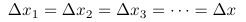
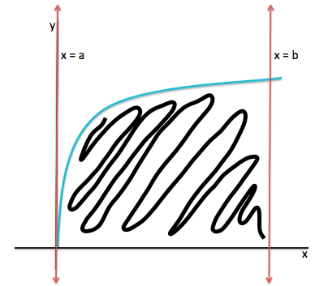
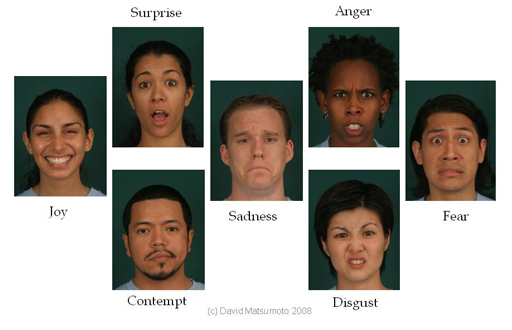

Welcome to WordPress. This is your first post. Edit or delete it, then start writing!
Evaluating a Limit as a Riemann Sum
In calculus, taking the Riemann sum is a method of approximating the area under a curve over a specific interval – it’s a way to estimate a definite integral. In this post, I will describe how a Riemann sum can be used to evaluate the limit at infinity of a specific type of sum.
It’s helpful to be familiar with the limit definition of a definite integral:
 The key to evaluating the type of limit explored in this post is to write the limit in the form of the right-hand side (RHS) of the equation above. Naturally, once the limit is written in such a way, it’s possible to equate the limit to an expression similar in form to the left-hand side (LHS) of the equation. Let’s look at some examples.
The key to evaluating the type of limit explored in this post is to write the limit in the form of the right-hand side (RHS) of the equation above. Naturally, once the limit is written in such a way, it’s possible to equate the limit to an expression similar in form to the left-hand side (LHS) of the equation. Let’s look at some examples.
Example 1
First, notice that the only difference between the given limit and the RHS of the equation is the argument of the summation. Therefore, we want to rewrite, in terms of x, the argument of the summation in the limit.
Let’s first to rewrite the 1/n. Remember that when taking a Riemann sum, we are essentially slicing the desired region into rectangles and adding up the resulting areas. In the equation above, the width of each rectangle is delta x_k and the height is f(x_k).
Furthermore, this calculation is even simpler if all the rectangles have the same width. That is,Then we have this graph:
Also notice that a Riemann sum approximation will be closer to the actual value of the definite integral if the width of each rectangle, delta x, is smaller. Therefore, we want delta x to be minimal.
Now look back to the given limit. Notice that as n approaches infinity, 1/n approaches 0 – essentially, 1/n is minimal. This is the exact behavior that we want for the width of the rectangles; therefore, we can let the width of each rectangle be 1/n.
Essentially, we rewrite 1/n = delta x. Now the limit becomes
The second step is to rewrite (k/n)^2 in terms of x. Specifically, since only the f(x_k) term (height of rectangle) remains, (k/n)^2 must be some function of x, Look at the graph below:
As shown in the graph, if all the rectangles have the same width (delta x) of 1/n, then
 And since all x_k are the same, for all values of k:From this, it’s evident that the height of each rectangle, f(x_k) is Given this, the limit becomes exactly the same as the RHS of the limit definition of a definite integral:
And since all x_k are the same, for all values of k:From this, it’s evident that the height of each rectangle, f(x_k) is Given this, the limit becomes exactly the same as the RHS of the limit definition of a definite integral: The final step is to find the limits of integration, a and b. Logically, a is the smallest x value and b is the largest x value- lines x=a and x=b bound the region in question.
The final step is to find the limits of integration, a and b. Logically, a is the smallest x value and b is the largest x value- lines x=a and x=b bound the region in question.
Since x=k/n, the smallest x occurs when the constant k is much smaller than n. This occurs when n goes to infinity regardless of the value of k – essentially, a is the limit as n goes to infinity of k/n for any constant k (let’s say k=1). Therefore, a=0:By the same logic, since x=k/n, the largest x occurs when k=n for any value of n. Therefore, b=1:
 We’ve now found all components necessary to rewrite the given limit as a definite integral:
We’ve now found all components necessary to rewrite the given limit as a definite integral:
Example Two
Let’s try another example. The key to evaluating the type of limit in question is to plug in delta x for 1/n and x for k/n.
Example Three
Let’s try a final example, for which the limits of integration, a and b, are not necessarily equal to 0 an 1, respectively. Look at the evaluation of the limit below:
Notice that after performing u-substitution, the limits of integration must be adjusted. This results in limits of integration that are 4 and 9, rather than 0 and 1, respectively.
After looking at these three examples, it is evident that we can evaluate certain limits as Riemann sums. Lastly, here are some ideas to think about:
- Is there a way to determine whether or not an limit can be successfully evaluated using this method?
- Can this method be used to evaluate limits in two dimensions (i.e. with both delta x and delta y)?
Teaching ARGO to Generate Emotions using Machine Learning

Now that ARGO has been completed, we’d like to teach ARGO to learn to generate emotions. It turns out that Machine Learning principles can be used to train a model to do this. Specifically, a discriminative model of emotion (discussed in this post) can be used to train a generative model that allows ARGO to learn to generate expressions of anger, happiness, sadness, and surprise. This post gives an overview of the generative model training process, followed by detailed explanations of each step.
A general outline of the training process, which is similar to a simple version of reinforcement learning, is diagrammed below:
Classifying ARGO’s Expression
Once ARGO displays the initial expression, we can use the discriminative model to classify ARGO’s expression as one of seven universal emotions. Because the classification of the expression is based on a feature vector of 13 distances between facial landmarks, it’s necessary to first obtain such a vector for ARGO’s expression. To do this, it’s also necessary to detect ARGO’s face and facial landmarks.
It’d be convenient if the human face detector and facial landmark detector could detect ARGO’s face and landmarks. Unfortunately, this is not the case.
But never fear! The problem can be solved simply by (1) training a new HOG object detector model to detect ARGO’s face, and (2) by training another shape predictor model to predict the locations of the 17 landmarks in ARGO’s detected face.
To train these two new models, I first collected images of ARGO displaying various expressions. Then, I used the imglab tool provided by Dlib to label the facial bounding boxes and the landmarks within them. This generated the training data for the new object detector and shape predictor, respectively. The last step was to train the two models. This was accomplished by typing the following at the command line (faces is the directory containing the training data):
[code language=”python”]
./fhog_object_detector_ex ../faces
./train_shape_predictor_ex ../faces
[/code]
The trained ARGO face detector and facial landmarking model can be used to obtain feature vectors to classify ARGO’s expression.
Evaluating ARGO’s Expression
In addition to classifying ARGO’s expression, it would be nice if there was a way to evaluate how “good” ARGO’s expression is – that is, to determine how well ARGO’s expression reflects the target emotion. If there was such a way, then it would essentially be possible for ARGO to learn by trial-and-error how to best express each emotion.
Luckily, there is such a method! It turns out that the discriminator model (
1 | polyCLF |
) can be used to acquire such feedback on the quality of ARGO’s expression. This is made possible by the
1 | predict_proba |
method from the scikit-learn Python package (recall that the discriminator was trained using scikit-learn methods).
[code language=”python”]
probabilities = polyCLF.predict_proba(feature_Vector)
[/code]
1 | predict_proba |
is a method that returns a vector of probabilities. One probability is calculated for each class, and each probability reflects the likelihood that the given example (represented as a
1 | feature_Vector |
) belongs to the class in question.
In our case, since there are seven emotion classes,
1 | predict_proba |
returns a 7×1 vector (
1 | probabilities |
). Each element of the vector is the probability that the given expression (represented by a 13×1
1 | feature_Vector |
) can be classified as a certain emotion. For instance, the first element of the vector (with index 0) is the probability that the expression is one of anger; the second is the probability that the expression is one of contempt; etc.
Let’s contextualize this idea through an example. Suppose ARGO is learning to express happiness. Positive feedback from the discriminator (increase in the probability that ARGO’s expression matches happiness) means that the model is adjusting ARGO’s facial features in the correct direction. On the other hand, negative feedback (decrease in probability) means that the model is not adjusting ARGO’s facial features in the right direction. Essentially, in order to reach the “optimal smile,” the model can learn how it should adjust ARGO’s features to maximize the probability of happiness.
This is the logic behind the training of the generative model.
Training the Generative Model
I defined the reward function as the probability that ARGO’s expression could be classified as the target emotion. While learning to express anger, happiness, sadness, and surprise, the generative model sought to adjust ARGO’s facial features in the direction that increased the reward value. In this way, the model learned over forty iterations how to maximize reward and consequently how to best express each emotion.
The forty iterations of training were divided into two sets of twenty iterations. The first and second sets of twenty iterations were devoted to reaching the optimal position for servos linked to ARGO’s eyebrows and mouth corners, respectively.
Adjusting Features
Recall that the servo position is determined by the
1 | servo_position |
number:
[code language=”python”]
echo “pin_num = servo_position” > /dev/servoblaster
[/code]
The step size is the amount by which
1 | servo_position |
changes when facial feature positions are adjusted. It’s important for the step size to be neither too large or too small. If it were too large, then the generative model might exceed or undershoot – and never reach – the maximum reward value and corresponding
1 | servo_position |
. The reward function would fail to converge. On the other hand, if the step size is too small, the model might reach a local maximum of the reward function rather than the desired global maximum.
Consequently, it’s beneficial to use a declining step size profile. In other words, the step size will start at a certain value and decrease over the iterations. This helps the model reach the global maximum of the reward function. I used the following declining profile for each set of twenty iterations:
First Twenty Iterations
The first twenty iterations focus on finding optimal eyebrow positions. First, ARGO’s facial features are positioned into the initial expression for one of the four emotions. Then,
1 | predict_proba |
is used to obtain the initial reward value for the target emotion. Next, by adding the appropriate step size to the current
1 | servo_position |
value, the model adjusts the position of the servo linked to the eyebrows. Finally, the process repeats with the start of the next iteration –
1 | predict_proba |
is used to obtain the next reward value, etc.
With at least two reward values to work with, it’s possible to calculate the gradient. At heart, the gradient is the partial derivative of the reward function. In layman’s terms, the gradient is the rate of change of the reward function- the change in reward (difference between current and prior probabilities) divided by the step size/change in servo position (alpha).
In our case, the sign of the gradient is more meaningful than the actual gradient value. A positive gradient means the reward value is increasing, which is the desired trend. This tells the generative model that it should continue adjusting the servo in the current direction. A negative gradient means the reward value is decreasing and the eyebrows are moving in the wrong direction. Accordingly, the gradient sign is a key element for determining how to next adjust the servos- whether
1 | servo_position |
(theta_servo) should be increased or decreased by the step size (alpha).
Second Twenty Iterations
To find the optimal mouth corner positions, the generative model uses the same strategy as above. The only difference is that now two servos are adjusted simultaneously and in the same direction. Movement of mouth corners in opposite directions is unnecessary since such movement is not involved in the expression of anger, happiness, sadness, or surprise.
Once the forty iterations are complete, the model has learned the best way for ARGO to express one of the four target emotions. The process can be repeated to train for the other three emotions.
Results
The overall results were reasonably good- the final reward value for anger was 99.68%; for happiness was 96.05%; for sadness was 64.95%; and for surprise was 81.58%. Our results might be improved by training the model for more iterations.
Once the face tracking, facial expression, discriminative, and generative systems were implemented, in real-time ARGO was able to detect and track a person’s face, classify his/her emotion, and generate the same expression in response to anger, happiness, sadness, and surprise. See this video clip!
More about the imglab tool can be found here. More about the
1 | predict_proba |
method can be found here. Source code for training the ARGO face and landmark detectors can be found here.
Meet ARGO! Part 2
The previous post discussed the physical construction of ARGO. In this post, I describe how to install and use software to control ARGO’s systems. The open source libraries that I use are Dlib, OpenCV, NXT Python, and ServoBlaster.
Face Tracking System
ARGO can move its head to track the first face it detects in video frames. ARGO moves its own face until the face it sees is centered in its field of vision. Movement is carried out by two NXT motors- one for angular motion and one for horizontal motion. I installed and used the NXT Python package for control of these two motors.
Before installing NXT Python it is necessary to install libusb, which can be done at the command line:
[code language=”python”]
brew install libusb-compact
[/code]
To install NXT Python that is compatible with Python 3.x, download the Zip file from this page. After unzipping the package, navigate to the package directory (the location of the package) from the command line and type the following:
[code language=”python”]
python setup.py install
[/code]
For face detection, either of the OpenCV or Dlib face detectors can be used to detect the faces. I wrote a program using NXT Python and Dlib to implement ARGO’s face tracking system:
[code language=”python”]
import cv2
import dlib
import nxt.locator
from nxt.motor import *
POWER=60 # Default power level for NXT motors
cap = cv2.VideoCapture(0) # Capture video from robot camera
b = nxt.locator.find_one_brick() # Connect to NXT brick
detector = dlib.get_frontal_face_detector() # Load Dlib face detector
while(True):
ret, frame = cap.read() # Get a video frame
dets = detector(frame, 1) # Apply face detector to frame
# If a face is detected
if len(dets)>0:
# Locate and draw bounding box around first face
rect=dets[0]
cv2.rectangle(frame, (rect.left(), rect.top()), (rect.right(), rect.bottom()), (0, 255, 0), 2)
facecenter=rect.center()
# Move ARGO until face is in central range of vision
if facecenter.y>160:
Motor(b, PORT_B).run(POWER)
elif facecenter.y<80: Motor(b, PORT_B).run(-POWER-7) else: Motor(b, PORT_B).idle() if facecenter.x>200:
Motor(b, PORT_A).run(POWER)
elif facecenter.x<120:
Motor(b, PORT_A).run(-POWER)
else:
Motor(b, PORT_A).idle()
# Wait if no face is detected
else:
Motor(b, PORT_A).idle()
Motor(b, PORT_B).idle()
cv2.imshow(‘frame’,frame) # Display the frame and bounded face
if cv2.waitKey(1) & 0xFF==ord(‘ ‘): # If ‘q’ key pressed, end program
break
# When everything done
cap.release() # Stop capturing video
cv2.destroyAllWindows() # Stop displaying frames
b.sock.close() # Disconnect from NXT brick
[/code]
Facial Expression System
Four servo motors are used to control the movement of ARGO’s facial features. One servo is used to control the blinking sub-system; another is used to control the eyebrow sub-system; and two are used to control the mouth sub-system. As opposed to NXT motors, an advantage of using servos is that they allow for precise control of movements.
A servo is controlled by pulse-width modulation (PWM). The pulse width of an electrical signal corresponds to the position of the servo. The pulse width can be anywhere from 0% to 100% of the duty cycle (i.e. cycle time). For servos, the pulse width usually ranges from 0.5 ms to 2.5 ms.
Servos were attached to the eyelids, eyebrows, and mouth corners using paperclips for linkage and hot glued onto ARGO.
Controlling Servos
I used a Raspberry Pi 3 to generate PWM signals. The advantage of using the Pi is that it has many GPIO pins. These GPIO pins can be programmed to send PWM signals to the servos. In order to program these pins, I used a software package called ServoBlaster, which allows for the control of up to 21 GPIO pins on the Pi.
I installed ServoBlaster on the Pi by typing the following at the Pi command line:
[code language=”python”]
git clone https://github.com/richardghirst/PiBits
cd PiBits/ServoBlaster/user
make
sudo make install
[/code]
Each of my servos was connected to one GPIO pin as follows:

The following command can be used to send pulses to the GPIO pins and control the servo.
[code language=”python”]
echo “pin_num = servo_position” > /dev/servoblaster
[/code]
1 | pin_num |
is the GPIO number of the pin (as shown in image above) to which the pulse will be sent.
1 | servo_position |
corresponds to the pulse width. Its value is interpreted in units of 10 microseconds by default. So for instance, a pulse width of 1.2 ms corresponds to a
1 | servo_position |
value of 120. This tells the motor to turn to a specific angle.
It takes some trial and error to find the
1 | servo_position |
values that move the servos to the desired positions. In my investigation, I found initial values that position ARGO’s facial features into approximate expressions of anger, happiness, sadness, and surprise. (Later on, I will train a model to fine tune these values.) For instance, the following commands tell ARGO to display an expression of happiness:
[code language=”python”]
echo “24 = 100” > /dev/servoblaster
echo “27 = 185” > /dev/servoblaster
echo “22 = 90” > /dev/servoblaster
[/code]
These values will come in handy for my exploration of Emotion Artificial Intelligence. In a later post, I will discuss how machine learning can be used to train a model so that ARGO learns to generate these expressions.
More about NXT Python can be found here. More about pulse-width modulation can be found here. More details about installation and use of ServoBlaster can be found here.
Meet ARGO! Part 1
Meet ARGO, an emotionally intelligent robot made of Legos.

ARGO (Anthropomorphic Recognition and Generation Objective) is a multi-system robot that can be trained to recognize and generate facial expressions. I built ARGO as part of my science fair project this year to investigate the field of Emotion Artificial Intelligence. ARGO incorporates four key systems:
- Face detection and tracking
- Facial expressions
- Emotion recognition
- Emotion generation
In this post, I will describe the physical construction of ARGO using Legos and Mega Bloks. In the next post, I will discuss the software used to control the four systems of ARGO.
Construction
To start off, I wanted ARGO to move itself to track my face. My first attempt at building ARGO quickly led to a dead end – the “head” portion (indicated by yellow rectangle) couldn’t rotate!
After some tinkering, I developed a design that worked, which I describe below.
Base
I made ARGO’s base using my Mega Bloks and Legos that I’ve had since I was two years old.
The base was made by stacking 3 rows of Mega Bloks.
To mount ARGO on the base, I created a platform using Mega Bloks and Legos.

Face Tracking
We want ARGO to be able to move its head. I used pieces from a Lego Mindstorms NXT kit to build a platform for head movement. I used Mindstorms because it comes with the NXT Intelligent Brick that can be used to control NXT motors. I used two NXT motors- one for horizontal movement and another for vertical movement.
I mounted the motors and camera on the platform. The gray and black NXT Lego piece (indicated by green box in image) allows for rotation of ARGO’s head. Movement of this piece is controlled by one NXT motor using a small gear.
Facial Features
ARGO has several facial features: two eyes, eyebrows, and a mouth. These features are used by ARGO to generate facial expressions that express emotion.
Eyes
To make the eyes, I used two white ping pong balls for the eyeballs, electrical tape for the irises, and easter eggs as eyelids. I wanted to make eyelids that could blink.
To allow the eyelids to move in a blinking manner, a rod was first attached to the two eyelids. This rod acted as an axis of rotation for the eyelids. A servo motor was attached to the rod using a paperclip.

Eyebrows
ARGO’s eyebrows are made of Lego pieces and pipe cleaners. The outer portion of each eyebrow was mounted on ARGO’s head and acted as an axis of rotation for the inner portion of each brow. One servo motor was attached to the inner portion of both brows with paperclips.
Mouth
ARGO mouth was made of a piece of insulated wire. The center of the wire was mounted on ARGO’s head. A paperclip was used to connect a servo motor to each mouth corner.
In Summary
Now ARGO is ready for the software! To be continued in the next post.
Delivery! Python-Compatible Packages for Emotion Recognition
When learning how to install and use an open-source package, one might find him/herself swimming through a myriad of articles and blog posts, among other information sources. Often, the more internet searching one conducts, the more confused s/he becomes! What version of the package should s/he install? Is the package compatible with the programming language s/he is using? Is there less cryptic documentation available for the functions provided by the package?
Given all the complications that may arise, I have written an simple guide for installation of the OpenCV and Dlib packages with Python compatibility for the development of an affective computer system (detailed in a previous post).
Installation at the Command Line
A MacBook Air with OS X El Capitan 10.11.6 was used to carry out the installation processes outlined in this post. The installed packages are compatible with Python 3.5.2.
We will be installing packages from the command line. This means that we will open the Terminal application:
Typing specific commands at the command line instructs your computer to carry out corresponding tasks. After each command you type, you must press the enter key. I will introduce several commands that are typically used to install packages at the command line. Use of these commands will be demonstrated later in this post.
The first command is
1 | brew |
. To use this command, you must install Homebrew. Homebrew can be installed by typing the following at the command line:
[code language=”python”]
ruby -e "$(curl -fsSL https://raw.githubusercontent.com/Homebrew/install/master/install)"
[/code]
If you would like to see a list of the packages you have installed by using the
1 | brew |
command, type the following at the command line:
[code language=”python”]
brew list
[/code]
Another useful installation command is the
1 | conda |
command. To use this command, you should install Anaconda. Anaconda is a data science platform that provides many useful tools, including the Jupyter Notebook (iPython Notebook) that provides an interface for input and execution of Python code. You can install Anaconda here. As with
1 | brew |
, if you would like to see a list of the packages you have installed by using the
1 | conda |
command, along with their respective versions and python compatibility, type the following at the command line:
[code language=”python”]
conda list
[/code]
Finally, there is the
1 | pip |
command. We won’t be using this command to install our packages, but it is useful in various settings for managing packages written specifically in Python. More about
1 | pip |
can be found here. If pip is not already installed on your computer, you can install it with the following command:
[code language=”python”]
sudo easy_install pip
[/code]
OpenCV
OpenCV is a software library for computer vision and machine learning. It contains over 2500 algorithms and supports C, C++, Python, Java, and MATLAB interfaces. For the purposes of emotion recognition, OpenCV is quite useful for its face detection and video capture functions. OpenCV also allows one to display frames captured by video and to draw boxes and facial landmarks around/on faces in frames.
Installation
We will be installing OpenCV version 3.1.0. To do so, type the following at the command line:
[code language=”python”]
conda install -c https://conda.binstar.org/menpo opencv3
python -c "import cv2; print(cv2.__version__)"
[/code]
Execution of line 1 leads to the installation of OpenCV. Line 2 allows you to check the version of OpenCV that has been installed. The output of the second command should be “3.1.0.”
Face Detector
The OpenCV face detector works by using a Haar feature-based cascade classifier. This is a machine learning-based approach in which a classifier (model) is trained from features collected from a large set of images. The images are either positive or negative- in other words, they either contain a face or do not, respectively. The features used to train the model are called Haar features.
Each feature is a number calculated by subtracting the number of pixels occupying the white region(s) from the number of pixels occupying the black region(s).
How are these features used in face detection? Suppose we have an image of a face. There are about 6000 Haar features that the classifier applies to determine whether a face is present. However, this can be very inefficient and time consuming!
Is there a better solution? Since a large portion of the image is likely to not contain a face, a more efficient approach is the cascade of classifiers method. This means that rather than directly applying 6000 features to an image, we place the features into groups, with one classifier responsible for each group. The resulting classifiers are then applied to the image sequentially. If an image does not pass the first stage of classification, it is discarded. If it does pass, the second classifier is applied and the process repeats.
If an image passes all stages of classification, then it contains a face. More about Haar cascades can be found here.
Dlib
DLib is a library written in C++ with a Python API. It includes portable code, documentation, machine learning algorithms, graphical user interfaces (GUI), and image processing functions. Two important functions that Dlib provides are its face detector and its 68-point facial landmark detection model (described in a previous post).
Installation
We will be installing Dlib version 18.18. Before installing Dlib, you must install X11, Boost, Boost.Python, and CMake. X11 can be installed from the App Store. Instructions for installation of Boost and Boost.Python are available here. To install CMake, and Dlib, type the following at the command line:
[code language=”python”]
brew install cmake
conda install -c https://conda.anaconda.org/menpo dlib
[/code]
Face Detector
The Dlib face detector takes an approach different from that of OpenCV. Instead, it uses the Histogram of Oriented Gradients (HOG). HOG is a computer vision and image processing technique used for object detection (face detection, in our case).
It first divides a given image into localized portions called cells. Then, for each cell, a histogram of the occurrence of specific gradients in the image is computed. Adjacent cells are grouped into “blocks.” Normalized groups of cell histograms represent a block histogram. The set of block histograms for the image are used to create a feature vector. The vector is then passed to a linear SVM model, which classifies the image as face-containing or non-face-containing.
A more detailed explanation of HOG can be found here.
Various OpenCV tutorials and detailed documentation of Dlib functions are available online.
Training a Physiologically Based Model for Emotion Recognition
What is “the universal language of mankind?” According to Henry Longfellow, it’s music. But what if we say that emotion is the universal mode of communication?
If that’s true, then emotion recognition must be a vital part of our lives. Currently, computers and most robots are incapable of recognizing emotions. How would our lives change if a computer could understand when we’re happy or sad? And what if a computer could actually learn to recognize emotions? It turns out that machine learning (ML) can be used to teach a computer to do so.
The Basics of Machine Learning
In ML, a model learns from a set of data (training examples) what features to use to best classify the data- it figures out the best features to use to map each training example to the correct class. There are generally two types of ML- unsupervised and supervised.
In unsupervised learning, the model is trained to make reasonable predictions for new data, given unlabeled data and the number of classes into which the data should be divided. The model learns what the classes should be on its own. In contrast, in supervised learning, the model is trained to make reasonable predictions for new data, given a set of correctly labeled training data. An important distinction here is that in supervised learning, the classes are predefined.
Facial Landmarking
After previously looking into emotion recognition, I discovered facial landmark detection models. A facial landmarking model locates a specific set of points on a face detected in a given image, usually regardless of the size, location, and position of the face. Using a landmarking model in conjunction with computer vision and ML is an efficient, effective way to teach a computer to correctly recognize emotions.
For my ventures with emotion recognition, I used the face detector and 68-point facial landmarking model provided by Dlib, an open-source package. For more about how to install and use Dlib and how the face detector works, visit here.
Keeping these ideas in mind, let’s train a ML model to recognize emotion! Since we want the model to specifically discriminate the seven universal emotions, we will use a supervised learning algorithm.
A New Approach
It’s important to note that most existing ML approaches to emotion recognition use data features involving all the facial landmarks. But what if we were to base the features on a select set of physiologically significant landmarks instead? For a start, intuition tells us that this would increase the efficiency of the ML model- we would be working with lower-dimensioned data (less computing power and time required). Let’s see how else our results might improve.
Data Collection
I collected data for model training using the Extended Cohn-Kanade Dataset (CK+). CK+ consists of image sequences (one face per image) that start with a neutral expression image and end with a peak expression image. 327 of the sequences are labeled as one of the seven universal emotions. More about CK+ can be found here.
We first use 17 of the 68 facial landmarks provided by the Dlib model to create a new facial landmarking model. These landmarks correspond to muscle attachment points in the face (red points in images below). We would like to use this physiological landmarking model to create features for the ML model. Consider the pair of neutral and peak expression images for the first image sequence. The neutral image will serve as a baseline to which we can compare the expression image. We can apply the physiological model to each and calculate 13 key distances (orange lines) between the 17 points.
We obtain a 1×13 vector of these distances for both the baseline and expression images. We subtract the expression vector from the baseline vector, which yields a third 1×13 vector. This third vector is one of the feature vectors that we will use to train the ML model. I wrote a program in Python to perform this sequence of steps to obtain the feature vector for each of the 327 image sequences.
We can create 327×13 matrix of these vectors; this is the data that we will use to train the ML model. Remember that we are using supervised learning, so we need to attach labels to our data as well. The CK+ dataset provides separate files containing labels for the peak expression image of each image sequence. We can extract the label from each file and create a 327×1 vector of these labels. So the first label corresponds to the first feature vector, the second label corresponds to the second feature vector, etc.
Model Training
Now that we have our data, we need to determine what type of ML model to use. Among the supervised learning algorithms that have been used for emotion recognition, the Support Vector Machine (SVM) is one of the more successful. Given n-dimensional data, an SVM finds the hyperplane (n-1 dimensional plane) that is optimal for dividing the data into the given classes. So let’s train an SVM using the data we have extracted.
Since I wrote the data extraction program in Python, I used methods from the scikit-learn Python package to train the classifier:
[code language=”python”]
from sklearn.svm import SVC
train_data, train_labels, test_data, test_labels = cross_validation.train_test_split(featureMatrix, targetValues, test_size=0.4, random_state=3)
physSVM = svm.SVC(kernel=’poly’,probability=True).fit(train_data, train_labels)
[/code]
In line 2,
1 | train_test_split() |
splits our data (
1 | feature_Matrix |
) and corresponding labels (
1 | targetValues |
) into two portions: the training set (
1 | train_data |
,
1 | train_labels |
) and the test set (
1 | test_data |
,
1 | test_labels |
).
1 | test_size=0.4 |
means 40% of our labeled data will be allocated to the test set (used to evaluate the SVM), and 60% will be allocated to the training set (used to train the SVM).
In line 3, we use the training set to train the SVM.
1 | kernel='poly' |
means that we use a polynomial function to transform the data (essentially warping it), which then facilitates hyperplane classification.
Model Evaluation
Now that the model is trained, we would like to evaluate it:
[code language=”python” firstline=”4″]
from sklearn.metrics import confusion_matrix
predicted_labels = physSVM.predict(test_data)
confMatrix = confusion_matrix(test_labels, predicted_labels)
print(confMatrix)
[/code]
In line 5, the model predicts the labels for the test set data- it maps each feature vector to the most probable emotion class. In lines 6-7, we generate and print a confusion matrix for the prediction results. A confusion matrix displays the number of true positives, false positives, and false negatives for each class. We can use these numbers to calculate several measures of performance, such as accuracy, precision, recall, etc. (More about confusion matrices and their uses can be found here.)
Let’s use the confusion matrix to calculate the accuracy of the our SVM. Accuracy is the sum of true positives (total number of correctly classified test examples) for each class divided by the total number of predictions (the number of test examples). It allows us to evaluate the model as a whole.
Our physiological model has an accuracy of 84.0%. Overall, our model had an improvement in accuracy when compared to an existing SVM model. This is good, given that we achieved the results with one-fourth the computational complexity of the baseline model (17 landmarks vs. 68 landmarks). We could further refine the model to also classify intensity of emotion or to consider the duration of facial expressions. Regardless, we’ve successfully trained an SVM model to recognize the seven universal emotions from human facial expressions.
Affective Computing in a Nutshell
A typical human-computer interaction (HCI) entails a human using a computer for games, tests, work, and/or some other activity. The computer? No response. HCI today is essentially a one-way street.
Often, when we consider a scenario in which computers also participate in HCI, we imagine a disastrous result- the computer, equipped with newfound superhuman intelligence and power obliterates its human creators (as demonstrated in the movie Ex Machina). But is this really the case? The ideas of affective computing argue otherwise.
The Concept
What is affective computing? Rosalind Picard, an Associate Professor at the MIT Media Laboratory and a pioneer in the research of affective computing, describes it as “computing that relates to, arises from, or deliberately influences emotions.” It entails “giving a computer the ability to recognize and express emotions, developing its ability to respond intelligently to human emotion, and enabling it to regulate and utilize its emotions.”
Why is Affective Computing Important?
While sentimental or emotional dispositions are generally associated with irrational decisions, emotions are actually essential for sound decision-making. In fact, having too little emotion can lead a person to make decisions with disastrous consequences. As Picard explains in her book Affective Computing, regardless of how rational one’s thinking process is, the involvement of areas of the brain that regulate emotion is required. Emotional feedback that associates positivity or negativity with the results of certain decisions is necessary for one to learn how to make more beneficial decisions. For instance, the negative emotions associated with making a bad investment discourage a person from repeating the same choice.
Furthermore, for humans’ emotional and psychological needs to be fully satisfied in HCI, computers must be able to recognize, understand, and generate emotions. Cynthia Breazeal, the Principle Investigator of the Kismet project of MIT, explains that sociable robots (and computers, in our case) must convey intentionality, which requires communication of understanding. And an integral part of communicating understanding is the understanding of emotions.
The Ground Zero of Affective Computing
How might a computer garner the information it needs to become truly affective? Similar to how humans convey and perceive emotions through physical means, a computer might do so in the same way. The ideal affective computer of the future is able to analyze visible and audible indicators of emotion- it can observe your facial expressions, hear your voice, survey your posture and gestures, and consider the context in which you are behaving.
Enhancing HCI
It is also important for an affective computer to be able to interpret emotional indicators appropriately depending on context. Consider, for instance, certain physiological indicators that correspond to emotional states- a rise in heart rate can occur due to both exercise and fear. But it would be inappropriate for a computer to interpret a rise in heart rate due to exercise as an indicator of fear. The resulting decision made by the computer could have disastrous effects if an emotional indicator were interpreted incorrectly in a more serious scenario. Consequently, attentiveness to context is vital for accurate perception of and response to human emotion.
Other important factors that affective computing must account for are the intensity of one’s emotion, the events that gave rise to the emotion, and whether one was trying to suppress the emotion, among many others.
Effects of Affective Computing
If a computer can take all these sources of information and contextual factors into account when making decisions, then the road of HCI will become a prosperous two-way street. Furthermore, in addition to enhancing our daily lives and improving decision-making, affective computing can enhance the lives of people with disabilities. For instance, an affective computer agent can help an autistic person learn to better decipher, understand, and express emotions.
Affective computing has its applications in customer service and teaching as well. For instance, a company might test the efficacy of its advertisements by using an affective agent to gauge the emotional states of test subjects watching the ad. Those hoping for personalized robotic teachers to arrive in the future might consider incorporating an affective component to their ideas- the robot might adjust its teaching method based on the student’s reactions until it reaches an instructional format that is most conducive to learning.
More about affective computing can be found in the book Affective Computing by Rosalind Picard. More about HCI can be found in the paper “How to build robots that make friends and influence people” by Cynthia Breazeal and Brian Scassellati.
Breaking Down the Facial Action Coding System (FACS)
When analyzing facial expressions, is there a standardized way to describe one’s facial movements? The Facial Action Coding System (FACS) is a method of doing so.
What is FACS?
FACS is a tool devised by Ekman and Friesen (previously referenced here) in 1978 that maps out any observable movement of the face through Action Units (AUs). These movements are based on anatomical principles- each AU describes one observable movement of a facial feature (e.g. eyebrows) by facial muscles. Some examples of AUs are here:
Evidently, all facial expressions can be decomposed into AUs, and combinations of AUs are used to describe facial expressions and more complex facial movements. For example:
Facts About FACS
Similar to how one can learn to identify micro-expressions, one can also learn how to identify AUs and apply FACS after undergoing training with the FACS Manual and FACS Test.
FACS analysis can be applied in the same way as micro-expression analysis, with the exception that in real time, FACS is more applicable to macro-expressions (since it takes more time to decode expressions into combinations of AUs). On the other hand, FACS can be used to identify more expressions than the seven expressions corresponding to universal emotions.
FACS is used in professional settings by behavioral scientists, computer scientists, CG animators, among many others.
More About FACS and Emotion Recognition
It turns out that FACS has been extended to EMFACS, which is designed specifically for the decomposition of facial expressions that have emotional implications. EMFACS is essentially FACS applied in a selective and more efficient manner- only AUs that are related to emotional expression are considered when analyzing an expression, which reduces the amount of AU coding one must perform.
More about FACS can be found here.
Lie to Me: Micro-expressions Explained
The show “Lie to Me” may seem like a typical American crime drama series- Dr. Cal Lightman and his co-workers at the Lightman Group work with law enforcement agencies to solve crimes.
But upon looking more carefully at how the crimes are solved, we might be in for a fascinating surprise. Rather than relying purely on traditional investigation methods, Lightman and co. help investigators unmask the truth by analyzing the behavior and facial expressions of potential suspects. Specifically, they study individuals for involuntary emotional indicators that can convey one’s true feelings or intentions.
The Source
It turns out that the fundamental crime-solving methods used in “Lie to Me” are based on the studies of Dr. Paul Ekman, a psychologist and Professor Emeritus of UCSF who is known for his pioneering research of nonverbal emotional communication. While studying deception in a clinical setting (monitoring patients for suicidal intent), Dr. Ekman and colleague Wallace Friesen noticed in patients the recurrence of facial expressions that revealed feelings contrary to the patients’ claims. Thus, a key player in the concealing and deciphering of emotions was born (or rather, discovered): the micro-expression.
The Big Idea
What exactly are micro-expressions? Dr. Ekman provides us a basic description: “the rapid movements of facial muscles which are tied to underlying emotions.”
Let’s contextualize this idea. Expressions that we display voluntarily (for instance, smiling for happiness) generally last for several seconds and involve significant, notable movements of facial muscles. These are called macro-expressions. In contrast, micro-expressions are involuntary expressions that appear when one is trying to hide his/her true emotions. This might occur in two types of scenarios:
1) The person is hiding emotions from himself/herself (repression), or
2) The person is hiding emotions from others (deliberate concealment).
Let’s consider an example of the first scenario. Suppose a person who has a strained relationship with his father is ultimately disowned, and consequently adamantly refuses to believe that he is saddened by news of his father’s death. If he actually feels sad “deep down,” then we can expect him to display micro-expressions of sadness for a time after his father’s death.
The second scenario is probably more familiar to us. Deliberate concealment might occur, for instance, when a person whose mother recently passed away knows she herself is sad and tries to maintain a smile (macro-expression), but reveals micro-expressions of sadness.
Universality of Emotion
The applicability of studies of micro-expressions in law enforcement, among other settings, can be attributed to the fact that certain emotions are universal; that is, they are expressed in similar manner regardless of race, culture, and environment. A person of British descent expresses happiness in the same way as a person of Aboriginal descent in Australia- through a smile. This property is essential for actors when conveying emotions in movies as well. Dr. Ekman and his colleagues have identified seven universal emotions: anger, contempt, disgust, fear, happiness, sadness, and surprise. This universal quality extends to micro-expressions as well.

More About Micro-Expressions
A person is more predisposed to display micro-expressions in high-stakes situations (for instance, while testifying in court). But regardless of one’s situation or heritage, a micro-expression will be displayed in the same way: quickly and involuntarily.
How quickly is quickly? Research has shown that micro-expressions tend to last for less than half a second- they take about 1/15 to 1/25 of a second. Most people do not notice micro-expressions when interacting with others. In fact, in order to be able to identify micro-expressions during crime investigations, it is often necessary to videotape a person’s face and review the recording at a slower speed. Inconsistencies between a witness’s micro- and macro-expressions are reliable indicators that the witness might be lying.
How does this affect our lives?
Dr. Ekman has developed several training tools for micro-expression recognition. Using these training tools, a person can enhance his/her ability to detect and interpret micro-expressions from both frontal and profile perspectives of another’s face.
Why might we want to improve our ability to analyze micro-expressions? For a start, being able to recognize concealed emotions helps us strengthen interpersonal connections and better respond to others. For example, we might identify when a friend experiences a strained family relationships. Or, we might notice subtle hints that our employer either is pleased with our work or believes our team needs better work ethic. Micro-expression analysis is beneficial even more so for emotional counselors and therapists.
More about micro-expressions can be found here.